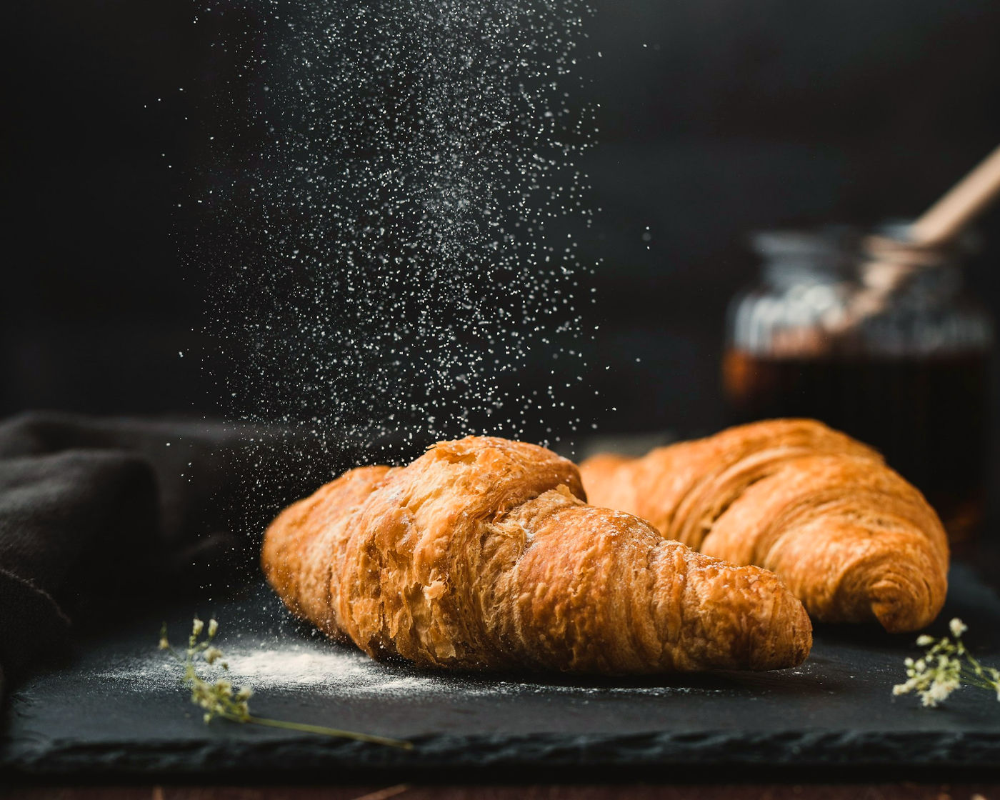
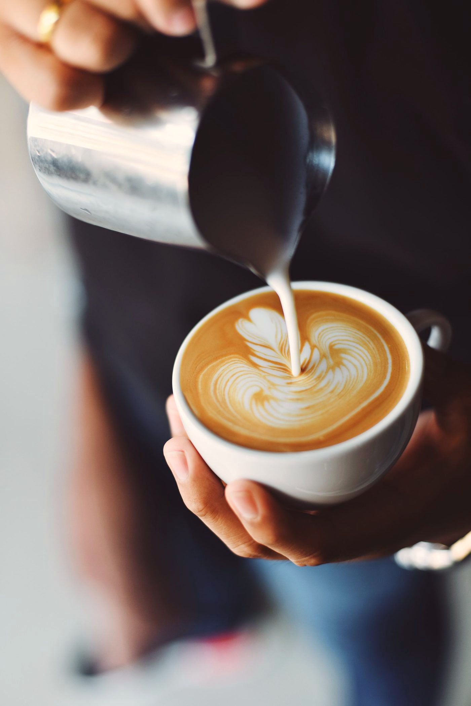
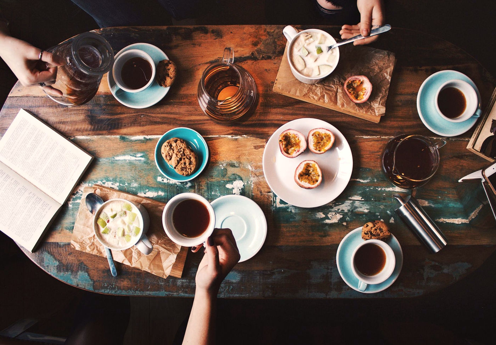

A neighbourhood room
A quiet table, for as long as you need it.
Bread from the morning oven, coffee poured without hurry, and a chair by the glass. Maison Café is a concept drawn for WEBAUR’s portfolio — written as a place, not as a business you can visit.
The house
Built around the table.
The work of a café is mostly ordinary: a loaf cut to order, a cup set down, the light moving across the floor. The website should feel the same — unhurried, specific, and a little bit like a journal.
This is not a real address. The photographs are freely licensed stills, chosen and cropped to hold a single mood: warm paper, dark green, copper, and the quiet of a room that keeps its chairs open.

From the oven
Butter, flour, and time.
The bakery is imagined as a short list: a cardamom bun, a croissant, a loaf that is still warm at opening. The menu is typeset as a piece of writing, not a spreadsheet.
At the bar
Coffee, poured slowly.
Filter when you have the morning. A latte when you want the cup to last. Nothing on this page pretends to be a rotating guest roaster or a set of awards — only the gesture of a careful pour.

Bread, slow coffee, open tables.
The sentence the room is built around.

The room
High windows, a green wall, pastry on the counter.
Two corners of the same invented house: the counter in daylight, and the lamps after the street has gone quiet.


Come in
The door is drawn, not opened.
If this were a living café, this is where you would find the hours and ask for a table. On this concept, the visit page holds a fictional address and a clear note: nothing can be reserved.